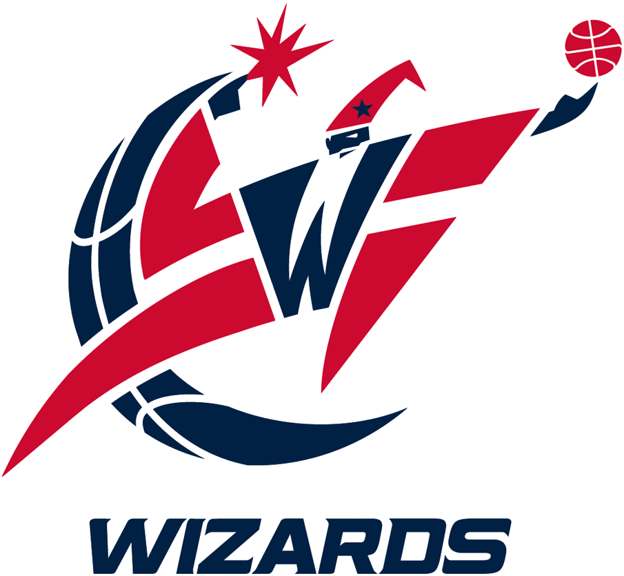
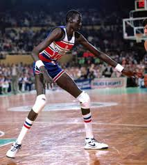
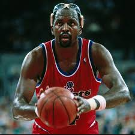
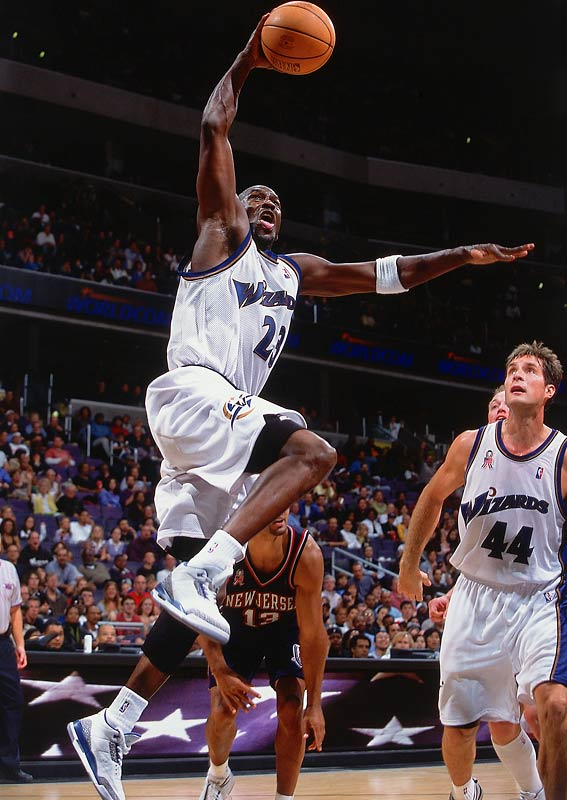
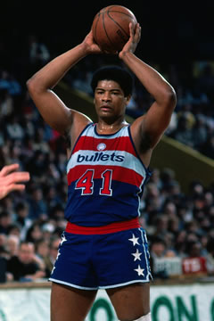
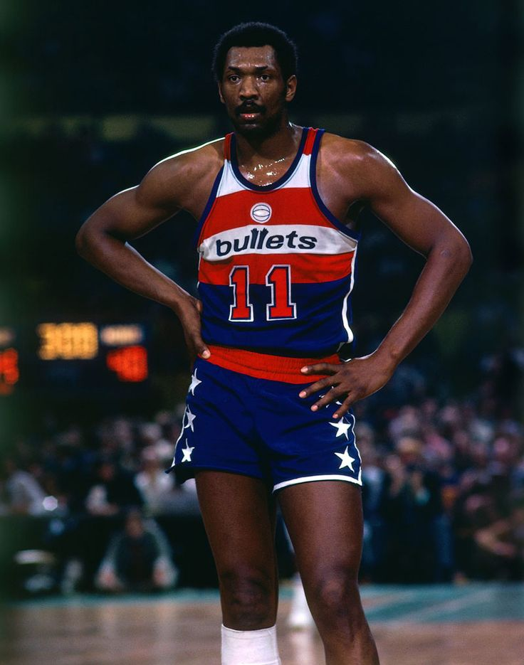
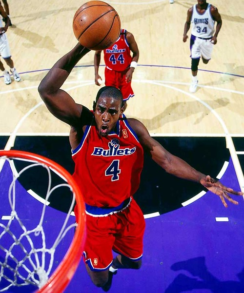

Washington Wizards
Alumni


Manute Bol
Bol took the painted areas of the NBA by storm when he racked up 397 blocks in 1985-86.
For a guy with 80 appearances and 60 starts, that was good for five blocks per game. Though he only played in Washington for three seasons, he remains a beloved player due to America's affinity for shot-blockers.
Bol is as legendary as shot-blockers get. The 7'7'' center is standing on two feet in the above photo, while guard Muggsy Bogues vaults his 5'3'' frame at the rim.
Though Dikembe Mutombo's last name may have been synonymous with blocked shots (thanks in part to this commercial,) Bol had also clearly mastered the art of shot-blocking.

Moses Malone
A pit-stop on a illustrious career path ordinarily would not warrant a spot on a franchise's top-25 list of best players, but Moses Malone is no ordinary player.
The Hall of Famer led the Wiz to the playoffs in both his seasons, despite a 38-44 mark in 1987-88. That was his second season with the team. He registered 20.3 points a contest that year, his worst total in ten seasons, and added 11.2 boards a game.
So even in one of his worst years, Malone was still dominant. The year before he averaged 24.1 points per game and made a huge impact on the club.

Michael Jordan
The greatest player in NBA history was kind enough to close out his career in Washington, where he had two productive years before hanging up his jersey one last time.
Along with 22.9 and 20.0 scoring averages, Jordan also oversaw personnel decisions for the Wizards.
He rid the team of large contracts in the form of Rod Strickland and Juwan Howard (both of whom are a part of the ranking), moves hard to criticize at the time.
A major mistake, and the reason Jordan is below some less-than-impressive names on this list, was the drafting of Kwame Brown with the No. 1 overall selection in 2001.
Jordan has had to live with the pick for years now, but still, Tyson Chandler, Joe Johnson and even Shane Battier in hindsight would have been picks with much more value.

Wes unseld
His overall numbers were not as impressive as Elvin Hayes and his scoring marks pale in comparison to Walt Bellamy, Gus Johnson, Earl Monroe and many others in Wizards history, Wes Unseld is undoubtedly the best player in franchise history.
The only player to spend his entire career with the team, Unseld remained a loyal fixture of the Bullets uniform since being drafted No. 2 overall in 1968.
It was the Bullets second straight No. 2 overall pick; they previous year, they drafted Earl Monroe with second overall selection. Like Monroe, Unseld won Rookie of the Year honors in his first season. Unlike Monroe—and any other player in league history besides Wilt Chamberlain—Unseld also won the NBA MVP in his rookie season.
Simply put, Unseld was a beast. Only three times in his NBA career did the 6'7'' center have a higher scoring average than rebounding average—those all being his final three years in the NBA.
That he was only 6'7'' and averaged 14 rebounds per game for his career tells you a little about the kind of force Unseld was.

Elvin Hayes
Hayes owns more franchise records than any other player in team history, and its easy to figure out why.
An unbelievable scorer with a great back-to-the-basket game, the Hall of Famer is No. 10 all time in points with over 27,000.
Furthermore, in his nine seasons as a Bullet, Hayes missed a total of seven games. Third in NBA History in minutes played, Hayes was nearly indestructible in his 16 NBA seasons.
A critical part of the 1978 championship team, Hayes is simply one of the greatest NBA players of all time. That he is not No. 1 on this list is more a testament to the unique playing style of the player who claimed the top spot.
Hayes, for all its worth, was and still is the prototype for any GM's dream NBA forward-center.
The franchise has retired his No. 11.

Chris Webber
When Washington (still known as the Bullets) acquired Chris Webber from Golden State in the 1994 offseason, they reunited two former "Fab Five" members and had assembled what looked like a playoff-caliber roster.
According to this 1994 article by Frank Lawlor, then-Bullets general manager John Nash equated Webber's athleticism at the 4 to Shaquille O'Neal's at the 5.
Webber did not put up Shaq-like numbers until he headed to Sacramento, where he starred for the Kings from 1998-2004. In his four years in Washington, C-Webb never played more than 72 games in a season.
His years in Washington were productive, but he led the Bullets to only one playoff appearance.
Overall, Webber may be the one former Wizard on this list who leaves the sourest taste in the mouths of fans. Despite quality years, such as 1996-97 where he averaged 20.1 points, 10.3 rebounds and 4.6 assists per game, Webber only repeated this great effort one other season in Washington (the next one, 2008-09).
Since they gave up three first-round picks and a quality forward in Tom Gugliotta, they would have liked a little more production from Webber.